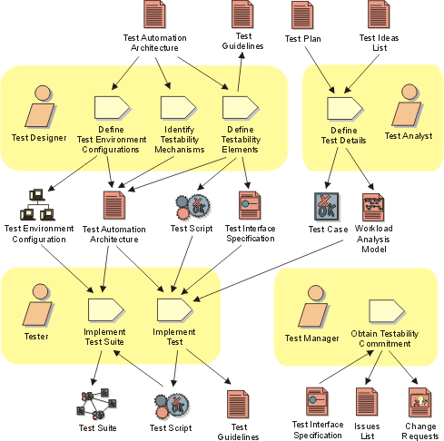

Disciplines >
Disciplines >
 Test >
Test >
 Workflow >
Verify Test Approach
Workflow >
Verify Test Approach
Disciplines >
Test >
Workflow >
Verify Test Approach
Workflow Detail:
|
Topics |
 |
The purpose of this workflow detail is to demonstrate that the various techniques
outlined in the Test Approach will facilitate the required testing. It verifies
by demonstration that the approach will work, produces accurate results and
is appropriate for the available resources. The objective is to gain an understanding
of the constraints and limitations of each technique, and to either find an
appropriate implementation solution for each technique or find alternative techniques
that can be implemented. This helps to mitigate the risk of discovering too
late in the project life-cycle that the test approach is unworkable.
For each iteration, this work is focused mainly on:
Although most of the roles involved in the Test discipline play a part in performing this work, the effort is primarily centered around the Test Designer and Tester roles. The most important skill areas required for this work include software architecture, software design and problem solving.
It is typical for this work to require more resource in iterations from the late Inception to early Construction phases, often requiring minimal resource late in the Construction and in the Transition phases. However, be aware that as the project progresses, new objectives or deliverables may be identified that require new Test Approaches to be defined and verified.
As a heuristic for relative resource allocation by phase, typical percentages of test resource use for this workflow detail are: Inception — 30%, Elaboration — 20%, Construction — 10% and Transition — 05%.
This work is somewhat independent of the test cycles, often involving the verification of techniques that will not be used until subsequent Iterations. This work normally begins after the Evaluation Mission has been defined for the current Iteration, although it can begin earlier. In some cases, finding the best implementation approach to a technique may take multiple Iterations.
The test implementation and execution activities that form a part of this work are performed for the purpose of obtaining demonstrable proof that the techniques being verified can actually work. As such, you should limit your selection of tests to a small, representative subset; typically focusing on areas with substantial quality risk. You should try to include a selection of tests that you expect to fail to confirm that the technique will successfully detect these failures.
While failures will be identified with the Target Test Items and these incidents logged accordingly, this work does not directly attempt to identify failures in the Target Test Items as it's main objective. Again, the objective is to verify that the approach is appropriate (it produces results that complement the Iteration objectives), is achievable (it can be implemented with given resource constraints), and that it will work.
For this work to produce timely results, it is often necessary to make use of incomplete, "unofficial" Builds, or to perform this work outside of a recognized Test Environment Configuration. Although these are appropriate compromises, be aware of the constraints, assumptions and risks involved in verifying your approach in under these conditions.
As the life-cycle progresses through its Phases, the focus of the test effort typically changes. Potentially this requires new or additional approaches, often requiring the introduction of new types of tests or new techniques to support the test effort.
In situations where the combination of domain, Test Environment Configuration and other important aspects of the approach are unprecedented, this work may take more time and effort. In some cases—especially where automation is a requirement—it may be more economic to obtain the use of specialized skills for a limited period of time (such as on contract) to define and verify the key technical needs of the Test Approach.
The following references provide more detail to help guide you in performing this work:
For further information about the underlying concepts behind this work:
|
Rational Unified
Process
|